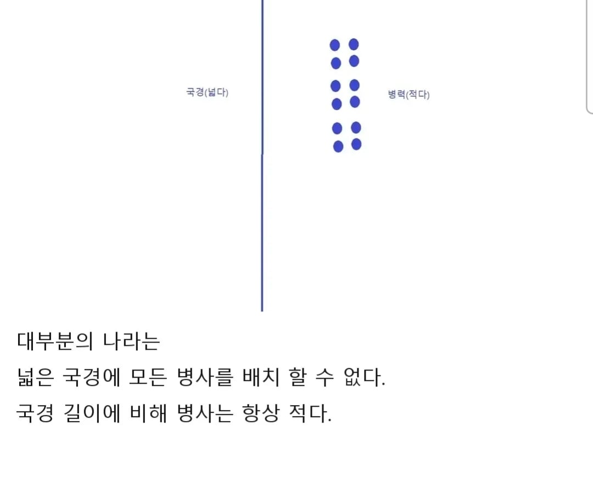
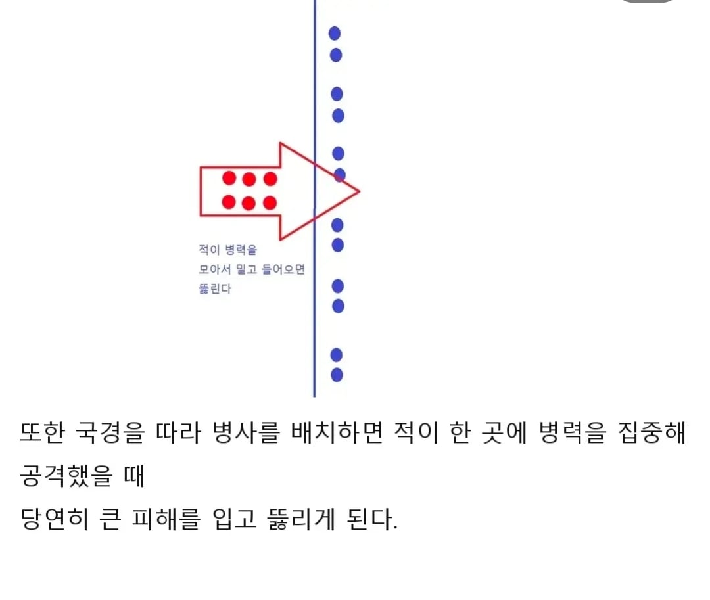
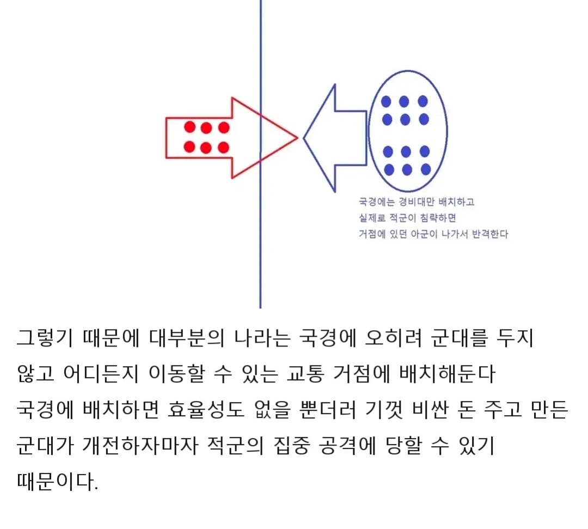
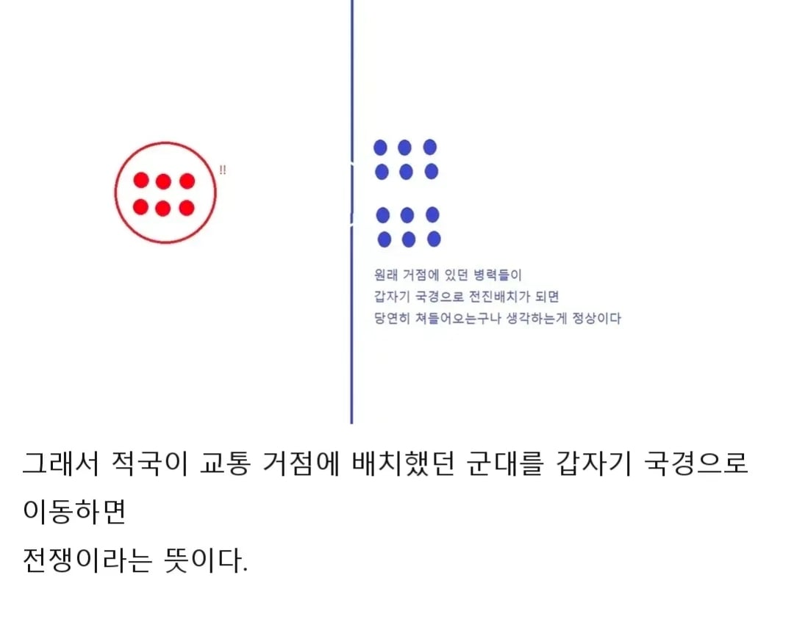
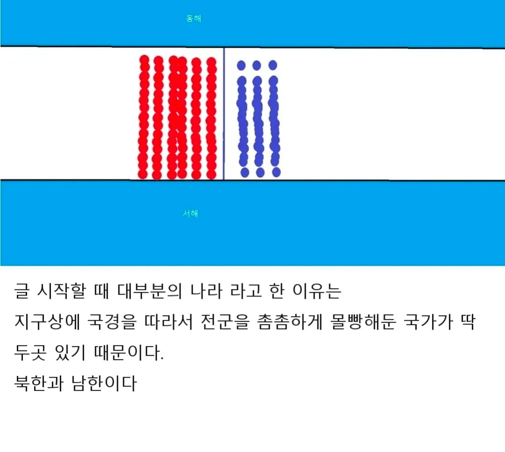

아니 월급 10만원 줄때면 사람이 싸니까 그렇겠지 했는데 월급 200주는 아직도 더 벽세우기보다 싸다고? 세상에
평야지대면 고려했겠지 이 환경이면 사람이 더 싼게 맞음
그게 쟤네가 우리 무서워서 하는 국경화 작업이잖음 ㅋㅋㅋㅋㅋ 단지 쟤네는 돈이 없어서 물리적 장벽을 못치는거지
근데 서부전선 평지도 장벽 세우면 빡셀텐데, 강원도쪽을? 절대 못함
그럼 계속 휴전상태로 장벽치는게 경제적 효용이 더 커지는 날이 오면 언젠가 칠수도 있겠네
남한의 전력이 훨씬 강한 상태라 전쟁나면 바로 북쪽으로 밀고 올라갈텐데 그런 상황에서 장벽은 완벽한 돈낭비가 됨
어차피 전쟁이 터질 상황이라면 그런 장벽이 좀 있다고 해서 막을 수 있는것도 아님
그리고 장벽을 최전방 수백킬로미터 범위에 설치하고 유지관리보수하는 비용은 절대 저렴하지 않음 그 비용으로 다른데 더 투자하는게 싸게먹힘
장벽으로 못 내려오게 막는다는거는, 내가 올라갈 때 나도 막힌다는 뜻이라 글쎄다. 막을까? 막는게 경제적 효용이 커지는 날이 올까 싶다.
너 지금 개념을 반대로 알고있음. 실제로 수도권 외곽에 방벽세우고 비무장지대에 둔덕 쌓으면서 요새화하던게 20세기 한국이고, 이러면 캠프화가 안됨. 그 전선을 다 누가 지키는데? 되려 그걸 포기하고 중대막사가 대대통합막사화 되면서 병력이 결집된거임
이동하지 못 하는 무기나 군사시설은 이동 가능한 것보다 가치가 훨씬 떨어짐. 결국 자기 손으로 전력과 국방비 투자를 고정된 지역에 묶어버리는건데, 그게 효용성이 더 커지는 상황은 다 포기하고 휴전선만 지키는게 우선인, 대한민국이 부카니스탄보다 약체인 상황이라는 것과 동의어임
그리고 장벽 혹은 강화된 방어시설에 대한 환상은 마지노선이라고 하는 역사적 실패사례가 있음.
막고!
우린 뭐 휴전국가니까
군사분계선 불 켜고 끌 때 좀 장관이긴 함 ㅋㅋ
국경배치는 맞지만 몰빵은 아니지
국경 배치를 안 하는 것은 뚫리냐 마냐 이전에 원래 국경에 배치하면 도발이라서
문명에서도 국경에 군대갖다두면 뭐라고 함
문명할때 나는 병력은 당연히 국경에 가져다 놓는게 맞다고 생각했는데 타국이 자꾸 시비걸더라 ㅋㅋㅋ
걍 하나의 나라가 전세계를 싹 다 통일한다음 군대를 아예 없애버리죠?(이달의 우수 군인)
사람이 더 싸니까